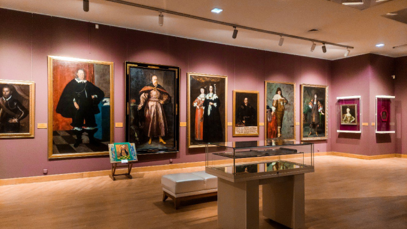

why design
I'm 23 years old. I have the title of architect engineer, which I gained recently at the Poznań University of Technology. I am interested in all kinds of applied arts. I constantly strive to look for new opportunities, discover new types and styles of design, and to understand this field and its techniques deeper and deeper after each project.
I'm 23 years old. I have the title of architect engineer, which I gained recently at the Poznań University of Technology. I am interested in all kinds of applied arts. I constantly strive to look for new opportunities, discover new types and styles of design, and to understand this field and its techniques deeper and deeper after each project.